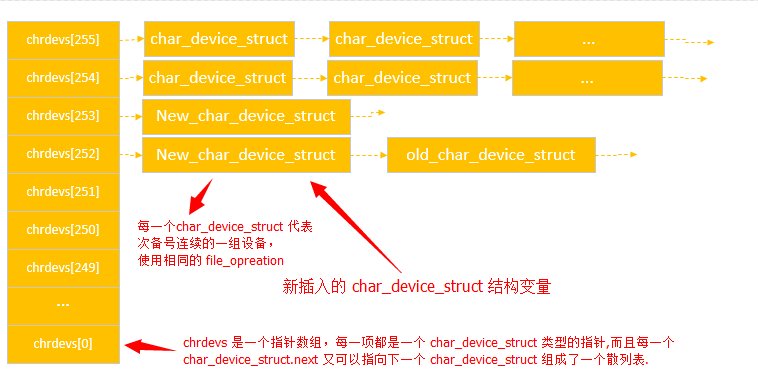
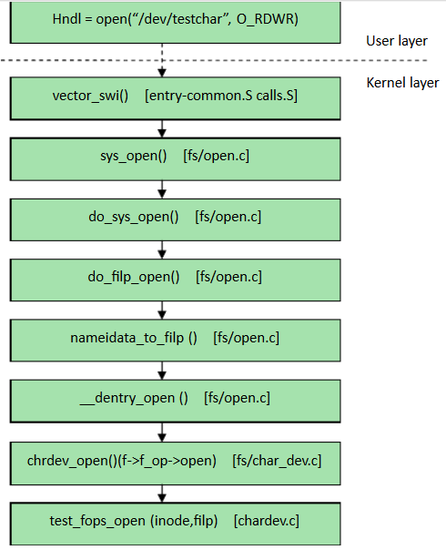

字符设备驱动
1.Linux 内核代码中相关文件名称：fs/char_dev.c fs/fs.h include/linux/cdev.h,include/linux/kobj_map.h drivers/base/map.c
2.相关的结构体struct cdev.
struct cdev {
struct kobject kobj; //kobj 对象
struct module *owner; //一般是THIS_MODULE
const struct file_operations *ops; //文件操作，read open
struct list_head list;
dev_t dev;
unsigned int count;
};
3.相关的函数
register_chrdev_region — register a range of device numbers
alloc_chrdev_region — register a range of char device numbers
__register_chrdev — create and register a cdev occupying a range of minors
unregister_chrdev_region — unregister a range of device numbers
__unregister_chrdev — unregister and destroy a cdev
cdev_add — add a char device to the system
cdev_del — remove a cdev from the system
cdev_alloc — allocate a cdev structure
cdev_init — initialize a cdev structure
4.其它函数
register_chrdev,内部调用的是__register_chrdev
5.函数代码分析
//fs/fs.h
static inline int register_chrdev(unsigned int major, const char *name,
const struct file_operations *fops)
{
return __register_chrdev(major, 0, 256, name, fops);
}
//char_dev.c
int __register_chrdev(unsigned int major, unsigned int baseminor,
unsigned int count, const char *name,
const struct file_operations *fops)
{
struct char_device_struct *cd;
struct cdev *cdev;
int err = -ENOMEM;
cd = __register_chrdev_region(major, baseminor, count, name); //@1
if (IS_ERR(cd))
return PTR_ERR(cd);
cdev = cdev_alloc(); @2
if (!cdev)
goto out2;
cdev->owner = fops->owner;
cdev->ops = fops;
kobject_set_name(&cdev->kobj, "%s", name);
err = cdev_add(cdev, MKDEV(cd->major, baseminor), count); //@3
if (err)
goto out;
cd->cdev = cdev;
return major ? 0 : cd->major;
out:
kobject_put(&cdev->kobj);
out2:
kfree(__unregister_chrdev_region(cd->major, baseminor, count));
return err;
}
@1:static struct char_device_struct *
__register_chrdev_region(unsigned int major, unsigned int baseminor,
int minorct, const char *name)
{
struct char_device_struct *cd, **cp;
int ret = 0;
int i;
/*申请char_device_struct,并清空*/
cd = kzalloc(sizeof(struct char_device_struct), GFP_KERNEL);
if (cd == NULL)
return ERR_PTR(-ENOMEM);
mutex_lock(&chrdevs_lock);
/*假如是major为0时，表示动态申请，逆序遍历指针数组 chrdevs(char_device_struct *)为空时，表明没有被使用，同时将索引赋值给major*/
/* temporary */
if (major == 0) {
for (i = ARRAY_SIZE(chrdevs)-1; i > 0; i--) {
if (chrdevs[i] == NULL)
break;
}
if (i == 0) {
ret = -EBUSY;
goto out;
}
major = i;
ret = major;
}
/*使用major*/
cd->major = major;
/*使用register_chrdev时，baseminor 为0*/
cd->baseminor = baseminor;
/*使用register_chrdev时，minorct为256*/
cd->minorct = minorct;
strlcpy(cd->name, name, sizeof(cd->name));
/* return major % CHRDEV_MAJOR_HASH_SIZE;major对应的是chrdevs的下标*/
i = major_to_index(major);
/*1.cp存放的是指针的地址，即chrdevs指针数组中的指针的地址 *cp为chrdevs的内容
2.首次调用，for循环会直接跳出*/
for (cp = &chrdevs[i]; *cp; cp = &(*cp)->next)
if ((*cp)->major > major ||
((*cp)->major == major &&
(((*cp)->baseminor >= baseminor) ||
((*cp)->baseminor + (*cp)->minorct > baseminor))))
break;
/*1.首次调用会直接跳出 */
/* Check for overlapping minor ranges. */
if (*cp && (*cp)->major == major) {
int old_min = (*cp)->baseminor;
int old_max = (*cp)->baseminor + (*cp)->minorct - 1;
int new_min = baseminor;
int new_max = baseminor + minorct - 1;
/* New driver overlaps from the left. */
if (new_max >= old_min && new_max <= old_max) {
ret = -EBUSY;
goto out;
}
/* New driver overlaps from the right. */
if (new_min <= old_max && new_min >= old_min) {
ret = -EBUSY;
goto out;
}
}
/*首次调用，cd->next = NULL,*cp 即chrdevs[i]，相当于chrdevs[i] = cd
2.*/
cd->next = *cp;
*cp = cd;
mutex_unlock(&chrdevs_lock);
return cd;
out:
mutex_unlock(&chrdevs_lock);
kfree(cd);
return ERR_PTR(ret);
}
经过@1函数调用,会形成如图的效果：

@2
struct cdev *cdev_alloc(void)
{
/*申请cdev结构体，并清空*/
struct cdev *p = kzalloc(sizeof(struct cdev), GFP_KERNEL);
if (p) {
/*初始化cdev 中的list双向链表*/
INIT_LIST_HEAD(&p->list);
/*初始化cdev中kobject*/
kobject_init(&p->kobj, &ktype_cdev_dynamic);
}
return p;
}
@3
 int cdev_add(struct cdev *p, dev_t dev, unsigned count)
int cdev_add(struct cdev *p, dev_t dev, unsigned count)
{
int error;
//将cdev 的dev 参数赋值
p->dev = dev;
p->count = count;
//将cdev p 添加到cdev_map中，文件系统靠cdev_map去查找cdev，然后找到对应的ops，操作具体的设备
error = kobj_map(cdev_map, dev, count, NULL,
exact_match, exact_lock, p);
if (error)
return error;
kobject_get(p->kobj.parent);
return 0;
}
.jpg)
其实在字符设备驱动里有2条线
1 一条是chardevs的cdev * 的指针数组，用来存放注册的cdev，相同的major number ，用链表链接起来，使用相同的文件操作指针
2 第二条是cdev_maps，通过cdev_add 函数将cdev 添加到cdev_map中，cdev 提供了一个cdev 的dummy open，当打开设备文件的时候，
文件系统会通过调用cdev_open,这个open函数每次打开文件都会调用的，kobj_lookup查找cdev map 一致的设备号，从而具体的设备ops赋值给上层的filep 文件指针。
chardevs指针数组会在chrdev_show 函数中调用，遍历chardevs 中的设备，通过cat proc/devices ,可以看到设备文件。其中chardevs 就是我们所创建的设备文件
Character devices:
1 mem
4 /dev/vc/0
4 tty
4 ttyS
5 /dev/tty
5 /dev/console
5 /dev/ptmx
5 ttyprintk
6 lp
7 vcs
10 misc
13 input
21 sg
29 fb
89 i2c
99 ppdev
108 ppp
116 alsa
128 ptm
136 pts
180 usb
189 usb_device
204 ttyMAX
226 drm
239 chardevs
240 chardevs
241 chardevs
242 chardevs
243 chardevs
244 hidraw
245 aux
246 bsg
247 hmm_device
248 watchdog
249 rtc
250 dax
251 dimmctl
252 ndctl
253 tpm
254 gpiochip
Block devices:
7 loop
8 sd
9 md
11 sr
65 sd
66 sd
67 sd
68 sd
69 sd
70 sd
71 sd
128 sd
129 sd
130 sd
131 sd
132 sd
133 sd
134 sd
135 sd
253 device-mapper
254 mdp
259 blkext
整个文件调用流程是：
